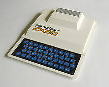
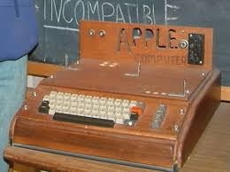
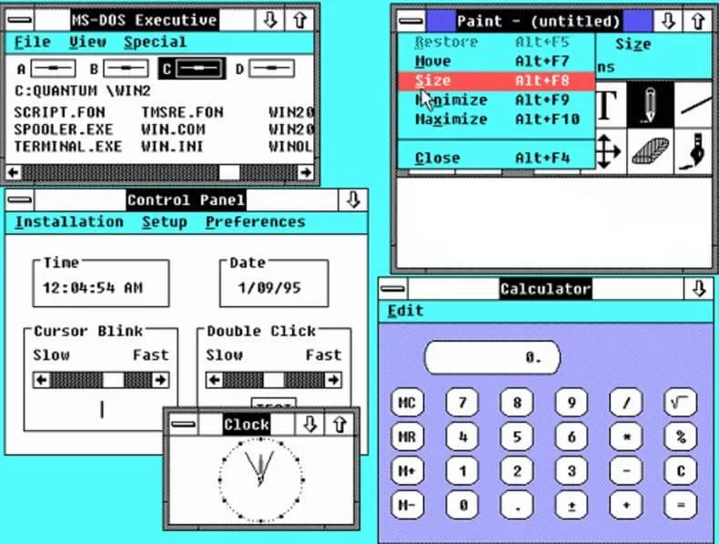

Davyd Antoniuk
2023
Rozpoczęcie ery komputerów od konstrukcji maszyn takich jak ENIAC, używanych głównie do obliczeń militarnych.
Przykład wydarzenia: Wprowadzenie ENIAC (1946)
Przejście z komputerów mainframe do komputerów osobistych dzięki firmom takim jak IBM i Apple.
Przykład wydarzenia: Wprowadzenie Apple I (1976)
Początek dominacji systemów operacyjnych takich jak MS-DOS i Windows, które zmieniły sposób pracy na komputerze.
Przykład wydarzenia: Wprowadzenie MS-DOS (1981)
Pojawienie się Internetu i stron WWW, co zapoczątkowało nową erę komunikacji i dostępu do informacji.
Przykład wydarzenia: Utworzenie World Wide Web (1991)
Wzrost popularności smartfonów, tabletów i sztucznej inteligencji, które zdominowały współczesną technologię.
Przykład wydarzenia: Premiera iPhone'a (2007)